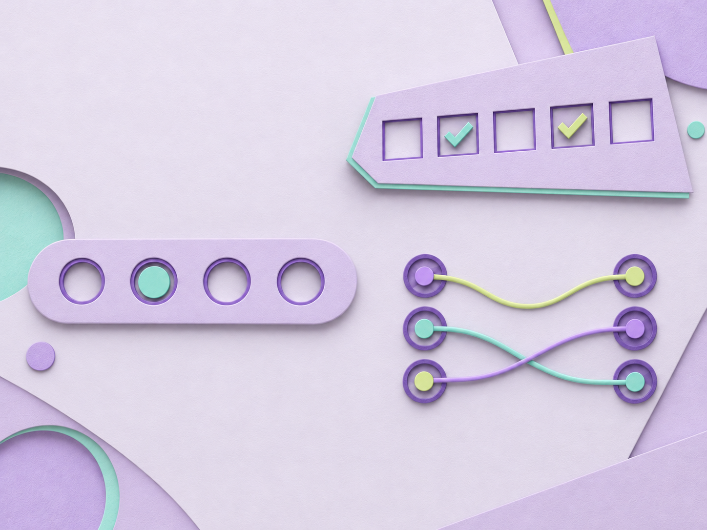

Выбрать.Отметить.Связать.
Форматы заданий
Один ответ
72 заданияОдин правильный вариант
Мультивыбор
72 заданияОтметить все верные варианты
Сопоставление
36 заданийСоединить все пары

Форматы заданий
Один правильный вариант
Отметить все верные варианты
Соединить все пары